Lab 5: MySQL and PDO
Instructions
Until now, every text, photo and price of Syaha was written in the HTML. In this lab the website gets a back end: a MySQL database that stores the trips, the services, the bookings and the messages, and PHP pages that read and write it with PDO. You will design the database, create it with phpMyAdmin, then build the pages that display it, the forms that fill it, and an admin area to manage it. Then you do the same for your team project.
I. The back end you will build
| Page | Reads | Writes |
|---|---|---|
index.php | destinations, published trips | — |
services.php | services, published trips | — |
about_us.php | team members | — |
contact_us.php | — | contact messages |
book.php (booking dialog) | the price of the trip | bookings |
admin/ | everything | trips (create, update, delete), booking status, messages |
SRC/Labs/Lab_5/
├── database/
│ └── syaha.sql the tables and their data (import it in phpMyAdmin)
├── includes/ files included by the pages, never opened directly
│ ├── config.php database settings
│ ├── db.php the PDO connection
│ ├── functions.php small helpers: e(), money(), redirect()...
│ ├── queries.php every SQL query of the site
│ ├── header.php <head> + navigation bar
│ ├── footer.php footer + scripts
│ ├── hero.php, features.php static parts of the home page
│ └── trips_section.php, booking_dialog.php parts shared by two pages
├── index.php, services.php, about_us.php pages that READ the database
├── contact_us.php shows the contact form and saves the messages
├── book.php saves a booking (no HTML: always redirects)
├── 404.php, login.php
├── backend.css styles of the messages added by the server
└── admin/ administration: create, update, delete
├── index.php dashboard
├── trips.php, trip_form.php, trip_delete.php
├── bookings.php, messages.php
└── header.php, footer.php, admin.css
Every page follows the same path. The browser asks Apache for a .php file; PHP runs it, sends SQL queries to MySQL, builds the HTML with the rows it receives, and Apache sends that HTML back. The browser never sees the PHP code nor the database.
Browser Apache + PHP (XAMPP) MySQL
| GET services.php | |
|---------------------------->| get_services() SELECT * FROM services |
| |--------------------------------------->|
| |<---------------- 6 rows ---------------|
| | foreach: one Service_Card per row |
|<--------- HTML -------------| |
C:/xampp/htdocs, start Apache and MySQL in XAMPP, import database/syaha.sql (Step 3), then open http://localhost/<project folder>/SRC/Labs/Lab_5/index.php. The admin area is .../Lab_5/admin/.II. Step 1: start MySQL and open phpMyAdmin
MySQL (MariaDB in XAMPP) is a server: it must be running before PHP can use it. Open the XAMPP control panel (on Windows, from the Start menu or the XAMPP icon of the taskbar):
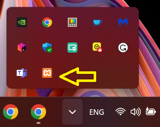
Start Apache and MySQL (their names turn green), then click the Admin button of MySQL: it opens phpMyAdmin (http://localhost/phpmyadmin), a web interface to manage the databases.
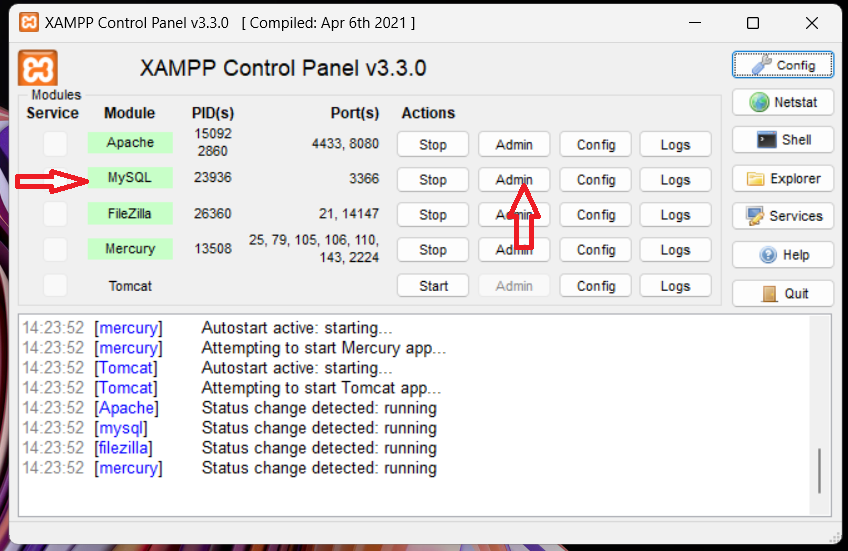
includes/config.php.III. Step 2: design the database
| Table | One row is | Main columns |
|---|---|---|
destinations | a destination of the home page | title, description, image_1, image_2 |
trips | a trip that can be booked | title, description, image, price, duration_days, is_published |
services | a service card | icon, title, description, price_label |
team_members | a member of the team | full_name, role, photo |
bookings | a booking of a trip | trip_id, full_name, email, departure_date, people, total_price, status |
contact_messages | a message of the contact form | full_name, email, phone, subject, message, is_read |
Relationships. A booking concerns one trip, and a trip can have many bookings: a one-to-many relationship. It is stored with a foreign key: the column bookings.trip_id contains the id of a row of trips. The title or the price of the trip are not copied into the booking: they are found with a JOIN (Step 3).
| Type | For | Example |
|---|---|---|
INT UNSIGNED AUTO_INCREMENT PRIMARY KEY | the identifier of each row, numbered by MySQL | id |
VARCHAR(n) | short texts, at most n characters | title VARCHAR(100) |
TEXT | long texts | description, message |
INT UNSIGNED | whole numbers ≥ 0 (prices in dinars have no decimals) | price |
TINYINT(1) | yes/no (1/0) | is_published, is_read |
DATE, TIMESTAMP | a day; a date and time | departure_date, created_at |
ENUM(...) | one value out of a fixed list | status |
id primary key; store each information once (the price of a trip is in trips only); use NOT NULL unless a value is really optional (phone); use utf8mb4 so that Arabic, accents and emojis are stored correctly, and the InnoDB engine, which supports foreign keys and transactions.IV. Step 3: create the database
1. With the phpMyAdmin interface
Click New in the left column, type the name of the database (syaha), choose the collation utf8mb4_unicode_ci and click Create:
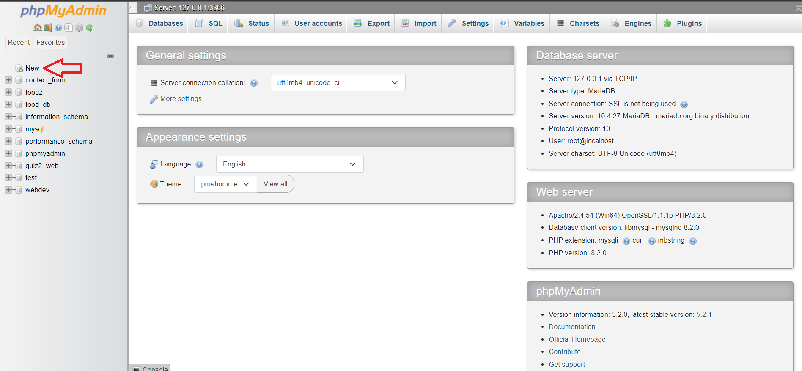
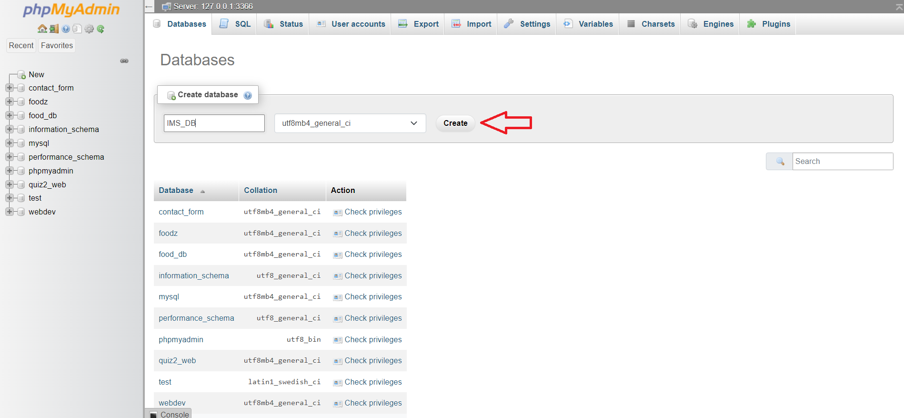
Then create a table: its name (1), its number of columns (2), and Create (3). For each column give a name (1), a type (2), a length (3), a default value (4), mark the primary key (5) and AUTO_INCREMENT (6), then Save.
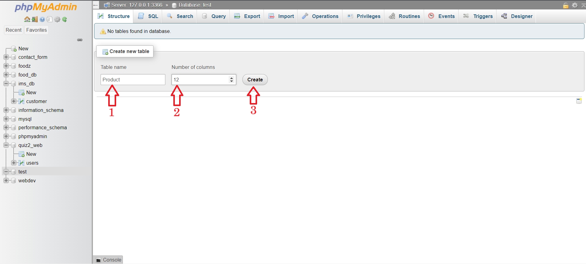
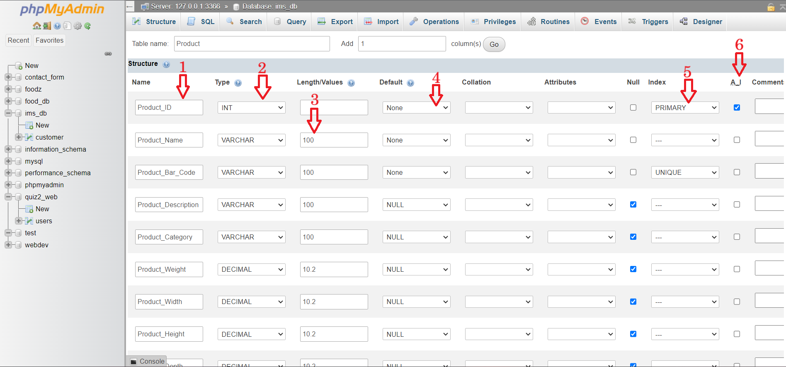
The Structure tab lets you change (1) or drop (2) a column later; the Operations and Drop buttons of the database delete a table.
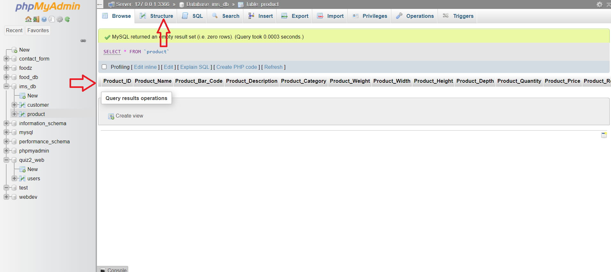
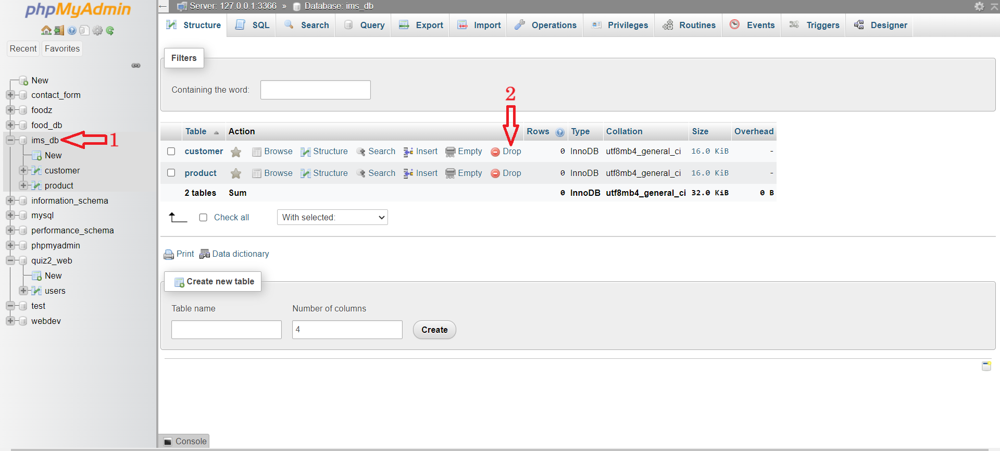
2. With SQL
Everything you click in phpMyAdmin is translated into SQL, and the SQL tab runs SQL directly. The structure of Syaha is written in database/syaha.sql. Read it: each CREATE TABLE is one table of Step 2.

-- ------------------------------------------------------------------
-- Syaha: database of the demo website (Lab 5)
-- Import it in phpMyAdmin (Import tab) or with:
-- mysql -u root < database/syaha.sql
-- Importing again deletes the tables and their data and recreates them.
-- ------------------------------------------------------------------
CREATE DATABASE IF NOT EXISTS syaha CHARACTER SET utf8mb4 COLLATE utf8mb4_unicode_ci;
USE syaha;
-- children first: a table cannot be dropped while another table references it
DROP TABLE IF EXISTS bookings;
DROP TABLE IF EXISTS contact_messages;
DROP TABLE IF EXISTS trips;
DROP TABLE IF EXISTS destinations;
DROP TABLE IF EXISTS services;
DROP TABLE IF EXISTS team_members;
-- the three destinations of the home page (mosques, cities, Sahara)
CREATE TABLE destinations (
id INT UNSIGNED AUTO_INCREMENT PRIMARY KEY,
title VARCHAR(100) NOT NULL,
description TEXT NOT NULL,
image_1 VARCHAR(255) NOT NULL, -- path inside SRC/IMAGES
image_2 VARCHAR(255) NOT NULL,
sort_order INT NOT NULL DEFAULT 0
) ENGINE=InnoDB;
-- the trips that can be booked
CREATE TABLE trips (
id INT UNSIGNED AUTO_INCREMENT PRIMARY KEY,
title VARCHAR(100) NOT NULL,
description TEXT NOT NULL,
image VARCHAR(255) NOT NULL,
price INT UNSIGNED NOT NULL, -- price per person, in dinars
duration_days TINYINT UNSIGNED NOT NULL DEFAULT 1,
is_published TINYINT(1) NOT NULL DEFAULT 1,
created_at TIMESTAMP NOT NULL DEFAULT CURRENT_TIMESTAMP
) ENGINE=InnoDB;
-- the service cards of the services page
CREATE TABLE services (
id INT UNSIGNED AUTO_INCREMENT PRIMARY KEY,
icon VARCHAR(60) NOT NULL, -- Font Awesome classes
title VARCHAR(100) NOT NULL,
description TEXT NOT NULL,
price_label VARCHAR(100) NOT NULL,
sort_order INT NOT NULL DEFAULT 0
) ENGINE=InnoDB;
-- the team of the about page
CREATE TABLE team_members (
id INT UNSIGNED AUTO_INCREMENT PRIMARY KEY,
full_name VARCHAR(100) NOT NULL,
role VARCHAR(100) NOT NULL,
photo VARCHAR(255) NOT NULL,
sort_order INT NOT NULL DEFAULT 0
) ENGINE=InnoDB;
-- one booking = one trip (many bookings can concern the same trip: one-to-many relationship)
CREATE TABLE bookings (
id INT UNSIGNED AUTO_INCREMENT PRIMARY KEY,
trip_id INT UNSIGNED NOT NULL,
full_name VARCHAR(100) NOT NULL,
email VARCHAR(255) NOT NULL,
departure_date DATE NOT NULL,
people TINYINT UNSIGNED NOT NULL,
total_price INT UNSIGNED NOT NULL, -- computed by the server, never taken from the browser
status ENUM('pending', 'confirmed', 'cancelled') NOT NULL DEFAULT 'pending',
created_at TIMESTAMP NOT NULL DEFAULT CURRENT_TIMESTAMP,
CONSTRAINT fk_bookings_trip FOREIGN KEY (trip_id) REFERENCES trips (id)
ON DELETE RESTRICT ON UPDATE CASCADE -- a trip that has bookings cannot be deleted
) ENGINE=InnoDB;
-- the messages sent with the contact form
CREATE TABLE contact_messages (
id INT UNSIGNED AUTO_INCREMENT PRIMARY KEY,
full_name VARCHAR(100) NOT NULL,
email VARCHAR(255) NOT NULL,
phone VARCHAR(20) NULL, -- optional
subject VARCHAR(20) NOT NULL,
message TEXT NOT NULL,
is_read TINYINT(1) NOT NULL DEFAULT 0,
created_at TIMESTAMP NOT NULL DEFAULT CURRENT_TIMESTAMP
) ENGINE=InnoDB;
The file then fills the tables with the texts and photos of the demo. Note that the paths of the images are stored, not the images themselves:
INSERT INTO trips (title, description, image, price, duration_days) VALUES
('المساجد', 'تحتوي الجزائر على العديد من المساجد والجوامع الإسلامية التي تتميز بالزخارف وفن العمارة المميزة ومن أهمها ما يلي: جامع كتشاوة: مسجد تاريخي موجود في عاصمة الجزائر، بُني المسجد في فترة الحكم العثماني في 1612 ميلادي وتمت توسعته لاحقاً على يد الباي حسن في العام 1792 ميلادي، أثناء الحكم الفرنسي للجزائر تحوّل هذا المسجد إلى كاتدرائية القديس فيليب، التي ظلت كذلك حتى عام 1962 ميلادي، وعندها تمت إعادة المسجد إلى وضعه الأصلي، وعلى الرغم من هذه التحولات فقد احتفظ المسجد بعظمته الأصلية وعراقته التاريخية، كما تم تسجيل المسجد في قائمة اليونسكو للتراث العالمي في عام 1992، كجزء من آثار مدينة الجزائر.', 'Lab_2/Masjid3.jpg', 8000, 1),
('المدن', 'تُعد الجزائر من الدول القليلة التي تمتلك مقومات هائلة في قطاع السياحة تجعلها إحدى الوجهات المفضلة للسياح حول العالم، فهناك العديد من الأماكن والمدن التي يمكن أن تقضي فيها عطلتك السنوية الصيفية في الجزائر، تمزج هذه المدن بين سحر الطبيعة الخلابة ورمال الشواطئ الذهبية وزرقة البحر والمعالم التاريخية الأثرية السياحية، التي تعكس تزاوجاً بين الطبيعة والتاريخ والبر والبحر،', 'Lab_2/City3.jpg', 15000, 3),
('الصحراء', 'تعد الصحراء الجزائرية ثاني أكبر صحراء في العالم، وذلك لشاسعتها، حيث تقارب مساحتها 2 مليون متر مربع وتحتوي على تراث طبيعي وثقافي وتاريخي غني ومتنوع. تعد السياحة الصحراوية جوهر المنتوج السياحي الجزائري. تحتوي الصحراء على 05 حظائر ثقافية مصنفة، وهي حظيرة الطاسيلي في ولاية ايليزي، الهقار في ولاية تمنراست، وادي ميزاب في ولاية غرداية والحظيرة الثقافية للأطلس الصحراوي في حظيرة توات، قورارة، تيديكلت.', 'Lab_2/Sahara3.jpg', 30000, 5);
3. Import the file
In phpMyAdmin, open the Import tab, choose database/syaha.sql and click Import (or, in a terminal: C:\xampp\mysql\bin\mysql -u root < database/syaha.sql). The database syaha appears with its six tables. Importing again resets them.
4. Practise SQL
Before writing PHP, try the queries the site will need in the SQL tab:
-- the published trips, cheapest first
SELECT title, price, duration_days FROM trips WHERE is_published = 1 ORDER BY price;
-- the bookings with the title of their trip (JOIN on the foreign key)
SELECT bookings.id, trips.title, bookings.full_name, bookings.people, bookings.total_price
FROM bookings
JOIN trips ON trips.id = bookings.trip_id;
-- number of bookings and travellers per trip (GROUP BY)
SELECT trips.title, COUNT(bookings.id) AS bookings, COALESCE(SUM(bookings.people), 0) AS travellers
FROM trips
LEFT JOIN bookings ON bookings.trip_id = trips.id
GROUP BY trips.id;
-- try to delete a trip that has bookings: refused by the foreign key
DELETE FROM trips WHERE id = 3;
The last query fails with Cannot delete or update a parent row: a foreign key constraint fails: ON DELETE RESTRICT protects the bookings. The admin area handles this error in Step 8.
V. Step 4: connect PHP to MySQL with PDO
PHP talks to MySQL through PDO (PHP Data Objects): the same functions work with MySQL, PostgreSQL or SQLite, errors become exceptions, and prepared statements protect against SQL injection. The settings are kept in one file:
includes/config.php
<?php
// Settings of the Syaha website.
// XAMPP's MySQL account is "root" with an empty password: fine on your own computer,
// never on a real server (see Lab 9). Keep the real settings of a server out of Git.
const DB_HOST = '127.0.0.1';
const DB_PORT = 3306;
const DB_NAME = 'syaha';
const DB_USER = 'root';
const DB_PASS = '';
// the images of the site are in SRC/IMAGES, two folders above the pages of Lab_5
const IMAGES_URL = '../../IMAGES/';
// a booking must be made at least this many days before departure
const BOOKING_MIN_DAYS = 3;
The connection is created by one function, the first time a page needs it:
includes/db.php
<?php
require_once __DIR__ . '/config.php';
/**
* Returns the connection to the database, created the first time it is needed.
* Every query of a page then reuses the same connection.
*/
function db(): PDO
{
static $pdo = null;
if ($pdo === null) {
$dsn = 'mysql:host=' . DB_HOST . ';port=' . DB_PORT . ';dbname=' . DB_NAME . ';charset=utf8mb4';
try {
$pdo = new PDO($dsn, DB_USER, DB_PASS, [
PDO::ATTR_ERRMODE => PDO::ERRMODE_EXCEPTION, // errors become exceptions
PDO::ATTR_DEFAULT_FETCH_MODE => PDO::FETCH_ASSOC, // rows as ['column' => value]
PDO::ATTR_EMULATE_PREPARES => false, // real prepared statements
]);
} catch (PDOException $e) {
// the details (host, user...) go to the error log, not to the visitor
error_log('Database connection failed: ' . $e->getMessage());
http_response_code(500);
exit('<p style="font-family: sans-serif; padding: 2rem">The database is not available. '
. 'Is MySQL started in XAMPP, and was database/syaha.sql imported?</p>');
}
}
return $pdo;
}
- The DSN (
mysql:host=...;port=...;dbname=...;charset=utf8mb4) says which server and which database to use, and the encoding of the texts. ERRMODE_EXCEPTION: every SQL error throws aPDOExceptioninstead of failing silently.FETCH_ASSOC: each row is an array['title' => ..., 'price' => ...].EMULATE_PREPARES => false: MySQL really prepares the queries (and returns numbers as numbers).static $pdokeeps the connection between two calls: one connection per page.- If MySQL is stopped, the visitor sees a short message; the details (user, host) go to the error log only.
index.php: you get the message of db.php. Start it again: the page works.VI. Step 5: display the database (READ)
All the SQL of the site is in one file, includes/queries.php: the pages call small functions and never write SQL themselves. The functions that read:
includes/queries.php (extract)
// ------------------------------------------------------------------ public pages (READ)
function get_destinations(): array
{
return db()->query('SELECT * FROM destinations ORDER BY sort_order')->fetchAll();
}
function get_services(): array
{
return db()->query('SELECT * FROM services ORDER BY sort_order')->fetchAll();
}
function get_team(): array
{
return db()->query('SELECT * FROM team_members ORDER BY sort_order')->fetchAll();
}
/** Published trips for the visitors, or all of them for the admin area. */
function get_trips(bool $published_only = true): array
{
$sql = 'SELECT * FROM trips' . ($published_only ? ' WHERE is_published = 1' : '') . ' ORDER BY id';
return db()->query($sql)->fetchAll();
}
/** One trip, or null if the id does not exist. */
function get_trip(int $id): ?array
{
$statement = db()->prepare('SELECT * FROM trips WHERE id = ?');
$statement->execute([$id]);
return $statement->fetch() ?: null;
}
query()runs a fixed query;fetchAll()returns all the rows.- As soon as a value comes from outside (a form, the URL), use
prepare()with a placeholder (?or:name) and pass the value toexecute(): it is sent separately from the SQL and can never change the query. fetch()returns one row, orfalsewhen there is none (hence?: null).
// NEVER: the value of the URL becomes part of the SQL code
$id = $_GET['id']; // the visitor types ?id=1 OR 1=1
$rows = db()->query("SELECT * FROM trips WHERE id = $id")->fetchAll(); // returns ALL the trips
// ALWAYS: a placeholder, and the value is sent separately
$statement = db()->prepare('SELECT * FROM trips WHERE id = ?');
$statement->execute([$_GET['id']]); // "1 OR 1=1" is just a (wrong) value
$trip = $statement->fetch();
The home page reads the data first, then includes the layout. Every value is written with e(), which escapes it with htmlspecialchars: a title containing <script> is displayed as text instead of being run (XSS).
index.php
<?php
require __DIR__ . '/includes/functions.php';
require __DIR__ . '/includes/queries.php';
// 1. read the data
$destinations = get_destinations();
$trips = get_trips();
// 2. display the page
$page_title = 'سياحة';
$active = 'home';
$styles = ['Hero', 'Slider', 'Destination', 'Trip', 'Features'];
$responsive = ['Hero', 'Destination', 'Trip', 'Features'];
$scripts = ['Image_Slider', 'Read_More', 'Favourites', 'Booking'];
$return = 'index.php';
require __DIR__ . '/includes/header.php';
?>
<main>
<?php require __DIR__ . '/includes/hero.php'; ?>
<!--Destination section starts here-->
<section class="Destinations" id="Destinations">
<h1>مختلف الوجهات</h1>
<?php foreach ($destinations as $index => $destination): ?>
<!-- one item out of two is reversed: zig-zag layout -->
<div class="<?= $index % 2 === 0 ? 'Destination_Item' : 'Destination_Item_Reverse' ?>">
<div class="Destination_Image">
<img src="<?= e(image_url($destination['image_1'])) ?>" alt="<?= e($destination['title']) ?>" />
<img src="<?= e(image_url($destination['image_2'])) ?>" alt="<?= e($destination['title']) ?>" />
</div>
<div class="Destination_Text">
<h2><?= e($destination['title']) ?></h2>
<p><?= e($destination['description']) ?></p>
</div>
</div>
<?php endforeach; ?>
</section>
<!--Destination section ends here-->
<?php require __DIR__ . '/includes/trips_section.php'; ?>
<?php require __DIR__ . '/includes/booking_dialog.php'; ?>
<?php require __DIR__ . '/includes/features.php'; ?>
</main>
<?php require __DIR__ . '/includes/footer.php'; ?>
includes/functions.php
<?php
require_once __DIR__ . '/config.php';
/** Escapes a value before writing it in the HTML: protects the page against XSS. */
function e(?string $value): string
{
return htmlspecialchars($value ?? '', ENT_QUOTES, 'UTF-8');
}
/** 15000 -> "15 000 دج" */
function money(int $amount): string
{
return number_format($amount, 0, ',', ' ') . ' دج';
}
/** URL of an image stored in the database (path inside SRC/IMAGES). $prefix is "../" from the admin folder. */
function image_url(string $path, string $prefix = ''): string
{
return $prefix . IMAGES_URL . $path;
}
/** Sends the browser to another page and stops the script. */
function redirect(string $url): void
{
header('Location: ' . $url);
exit;
}
/** Only accepts POST requests (forms that change data). */
function require_post(string $fallback): void
{
if ($_SERVER['REQUEST_METHOD'] !== 'POST') {
redirect($fallback);
}
}
The trip cards are generated by a loop, in a file shared by the home and services pages. The HTML is the one of Lab 2; only the values change:
includes/trips_section.php
<?php
// The trip cards (home and services pages), built from the trips table.
// Expects $trips (from get_trips()) and shows the result of a booking (book.php adds ?booked= or ?booking=).
?>
<!--Trip section starts here-->
<section class="Trip" id="Trips">
<h1>رحلات</h1>
<?php if (isset($_GET['booked'])): ?>
<p class="Flash Flash_Success" role="status">
تم تسجيل حجزكم رقم <?= (int) $_GET['booked'] ?> بنجاح. سنتصل بكم لتأكيده.
</p>
<?php elseif (isset($_GET['booking'])): ?>
<p class="Flash Flash_Error" role="alert">
لم يتم تسجيل الحجز: تحققوا من المعلومات المدخلة ومن تاريخ الانطلاق.
</p>
<?php endif; ?>
<div class="Trip_Cards">
<?php foreach ($trips as $trip): ?>
<div class="Trip_Card">
<div class="Trip_Image">
<img src="<?= e(image_url($trip['image'])) ?>" alt="<?= e($trip['title']) ?>" />
</div>
<h4><?= e($trip['title']) ?></h4>
<p class="Trip_Facts">
<span><i class="fa-solid fa-clock"></i> <?= (int) $trip['duration_days'] ?> يوم</span>
<span><i class="fa-solid fa-tag"></i> <?= money((int) $trip['price']) ?> للشخص</span>
</p>
<p><?= e($trip['description']) ?></p>
</div>
<?php endforeach; ?>
</div>
</section>
<!--Trip section ends here-->
The navigation bar and the footer are written once (Step 9 of Lab 2). The page sets a few variables ($page_title, $active, $styles...) before including the header:
includes/header.php
<?php
// Beginning of every public page: <head> and navigation bar.
// The page sets before including this file:
// $page_title text of <title>
// $active key of the current page in the menu ('home', 'services', 'about', 'contact' or '')
// $styles stylesheets of its components (in Lab_2) and $responsive (in Lab_3)
$menu = [
'login' => ['login.php', 'تسجيل الدخول', 'fa-solid fa-right-to-bracket'],
'contact' => ['contact_us.php', 'إتصل بنا', 'fa-solid fa-envelope'],
'services' => ['services.php', 'جميع الخدمات', 'fa-solid fa-briefcase'],
'about' => ['about_us.php', 'من نحن؟', 'fa-solid fa-circle-info'],
'home' => ['index.php', 'الرئيسية', 'fa-solid fa-house'],
];
?>
<!DOCTYPE html>
<html lang="ar">
<head>
<meta charset="UTF-8">
<meta name="viewport" content="width=device-width, initial-scale=1.0">
<?php foreach (['Nav_Bar', 'Lab_2_Page', ...$styles, 'Lab_2_Footer'] as $style): ?>
<link rel="stylesheet" href="../Lab_2/<?= $style ?>.css">
<?php endforeach; ?>
<!-- responsive design (Lab 3) -->
<?php foreach (['Nav_Bar', ...$responsive, 'Footer'] as $style): ?>
<link rel="stylesheet" href="../Lab_3/<?= $style ?>_Responsive.css">
<?php endforeach; ?>
<link rel="preconnect" href="https://fonts.googleapis.com">
<link rel="preconnect" href="https://fonts.gstatic.com" crossorigin>
<link rel="stylesheet" href="https://fonts.googleapis.com/css2?family=Cairo:wght@400;600;700;800&display=swap">
<link rel="stylesheet" href="https://cdnjs.cloudflare.com/ajax/libs/font-awesome/6.4.2/css/all.min.css"
integrity="sha512-z3gLpd7yknf1YoNbCzqRKc4qyor8gaKU1qmn+CShxbuBusANI9QpRohGBreCFkKxLhei6S9CQXFEbbKuqLg0DA=="
crossorigin="anonymous" referrerpolicy="no-referrer" />
<!-- JavaScript (Lab 4) and back end (Lab 5) -->
<link rel="stylesheet" href="../Lab_4+/Interactions.css">
<link rel="stylesheet" href="backend.css">
<title><?= e($page_title) ?></title>
</head>
<body>
<header>
<nav class="Nav_Bar_Items">
<h1 class="Nav_Bar_Logo">سياحة</h1>
<div class="Menu_Icon" id="Menu_Icon_ID">
<i class="fas fa-bars" id="Burger_Icon_ID"></i>
</div>
<ul class="Nav_Bar_Menu" id="Nav_Bar_Menu_ID">
<?php foreach ($menu as $key => [$url, $label, $icon]): ?>
<li>
<a href="<?= $url ?>" class="Nav_Bar_Menu_Item<?= $key === $active ? ' Active' : '' ?>">
<span><?= $label ?></span>
<i class="<?= $icon ?>"></i>
</a>
</li>
<?php endforeach; ?>
</ul>
</nav>
</header>
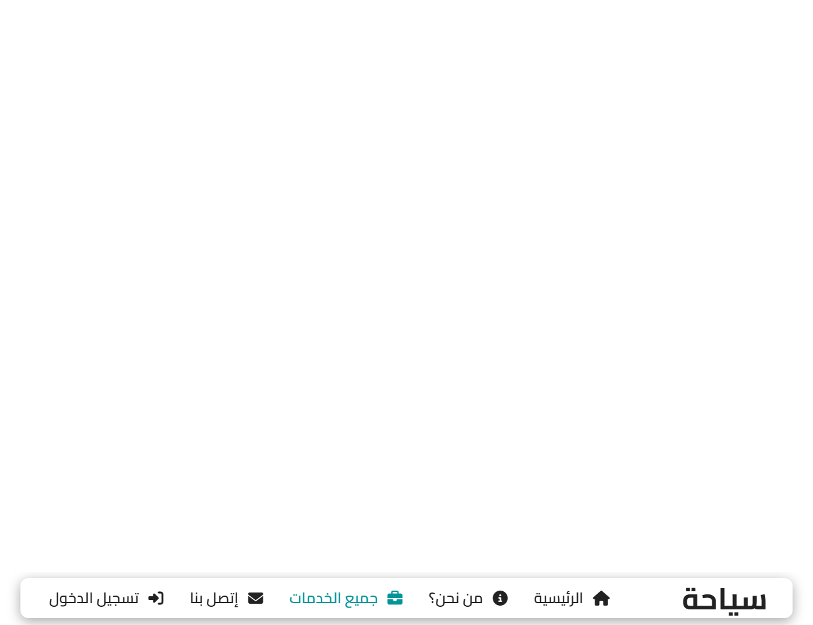
VII. Step 6: save the contact messages (CREATE)
The contact form of Lab 2 now sends its data to contact_us.php with method="post". The same file displays the form and processes it:
contact_us.php
<?php
require __DIR__ . '/includes/functions.php';
require __DIR__ . '/includes/queries.php';
$subjects = [
'info' => 'معلومات عامة',
'booking' => 'حجز رحلة',
'custom' => 'رحلة حسب الطلب',
'other' => 'أخرى',
];
$values = ['name' => '', 'email' => '', 'phone' => '', 'subject' => '', 'message' => ''];
$errors = [];
// the form was sent: check it, save it, then redirect (Post/Redirect/Get)
if ($_SERVER['REQUEST_METHOD'] === 'POST') {
foreach ($values as $key => $value) {
$values[$key] = trim($_POST[$key] ?? '');
}
// minimal checks: the browser already checked the form (Lab 4), but its checks can be bypassed.
// Lab 6 is about validating forms on the server in detail.
if (mb_strlen($values['name']) < 3) {
$errors[] = 'الرجاء إدخال الإسم الكامل.';
}
if (!filter_var($values['email'], FILTER_VALIDATE_EMAIL)) {
$errors[] = 'البريد الإلكتروني غير صحيح.';
}
if ($values['phone'] !== '' && !preg_match('/^0[5-7][0-9]{8}$/', $values['phone'])) {
$errors[] = 'رقم الهاتف غير صحيح.';
}
if (!array_key_exists($values['subject'], $subjects)) {
$errors[] = 'الرجاء اختيار موضوع.';
}
if (mb_strlen($values['message']) < 20) {
$errors[] = 'الرسالة قصيرة جداً.';
}
if (!$errors) {
create_message([
'full_name' => $values['name'],
'email' => $values['email'],
'phone' => $values['phone'],
'subject' => $values['subject'],
'message' => $values['message'],
]);
// a reload of the next page will not send the message a second time
redirect('contact_us.php?sent=1');
}
}
$page_title = 'سياحة | إتصل بنا';
$active = 'contact';
$styles = ['Hero', 'Contact_Us'];
$responsive = ['Hero', 'Contact_Us'];
$scripts = ['Contact_Form'];
require __DIR__ . '/includes/header.php';
?>
<main>
<section id="Hero_ID">
<div class="Hero">
<img src="../../IMAGES/Oran.jpg" alt="وهران" />
</div>
<div class="Hero_Text">
<h1>مرحبا بكم في موقعنا</h1>
<p>نحن نقدم لكم أفضل الخدمات</p>
<a href="#Contact" class="Show" id="Contact_Us_Btn_ID">تواصل معنا</a>
</div>
</section>
<div class="Contact_Us_Container" id="Contact">
<h1>إتصل بنا</h1>
<?php if (isset($_GET['sent'])): ?>
<p class="Flash Flash_Success" role="status">شكراً لكم! تم استلام رسالتكم وسنرد عليكم في أقرب وقت.</p>
<?php endif; ?>
<?php if ($errors): ?>
<div class="Flash Flash_Error" role="alert">
<p>لم يتم إرسال الرسالة:</p>
<ul>
<?php foreach ($errors as $error): ?>
<li><?= e($error) ?></li>
<?php endforeach; ?>
</ul>
</div>
<?php endif; ?>
<div class="Contact_Layout">
<div class="Contact_Info">
<div class="Contact_Info_Item">
<i class="fa-solid fa-location-dot"></i>
<div>
<h4>العنوان</h4>
<p>شارع ديدوش مراد، الجزائر العاصمة</p>
</div>
</div>
<div class="Contact_Info_Item">
<i class="fa-solid fa-phone"></i>
<div>
<h4>الهاتف</h4>
<a href="tel:+213555000000"><span dir="ltr">+213 555 00 00 00</span></a>
</div>
</div>
<div class="Contact_Info_Item">
<i class="fa-solid fa-envelope"></i>
<div>
<h4>البريد الإلكتروني</h4>
<a href="mailto:contact@syaha.example">contact@syaha.example</a>
</div>
</div>
<div class="Contact_Info_Item">
<i class="fa-solid fa-clock"></i>
<div>
<h4>ساعات العمل</h4>
<p>الأحد - الخميس: 08:00 - 17:00</p>
</div>
</div>
</div>
<!-- the values typed before an error are put back in the fields ("sticky" form) -->
<form action="contact_us.php" method="post">
<label for="Name">الإسم الكامل</label>
<input type="text" id="Name" name="name" value="<?= e($values['name']) ?>" autocomplete="name" required />
<label for="Email">البريد الإلكتروني</label>
<input type="email" id="Email" name="email" value="<?= e($values['email']) ?>" autocomplete="email" required />
<label for="Phone">رقم الهاتف</label>
<input type="tel" id="Phone" name="phone" value="<?= e($values['phone']) ?>" autocomplete="tel"
placeholder="05XXXXXXXX" pattern="0[5-7][0-9]{8}" />
<label for="Subject">الموضوع</label>
<select id="Subject" name="subject" required>
<option value="">اختر موضوعاً</option>
<?php foreach ($subjects as $key => $label): ?>
<option value="<?= $key ?>" <?= $key === $values['subject'] ? 'selected' : '' ?>><?= $label ?></option>
<?php endforeach; ?>
</select>
<label for="Message">الرسالة</label>
<textarea id="Message" name="message" rows="5" required><?= e($values['message']) ?></textarea>
<button type="submit">إرسال</button>
</form>
</div>
<iframe class="Contact_Map" title="موقع الوكالة على الخريطة" loading="lazy"
referrerpolicy="no-referrer-when-downgrade"
src="https://www.openstreetmap.org/export/embed.html?bbox=3.03%2C36.75%2C3.07%2C36.78&layer=mapnik&marker=36.765%2C3.05"></iframe>
</div>
</main>
<?php require __DIR__ . '/includes/footer.php'; ?>
includes/queries.php (extract)
function create_message(array $message): int
{
$statement = db()->prepare(
'INSERT INTO contact_messages (full_name, email, phone, subject, message)
VALUES (?, ?, ?, ?, ?)'
);
$statement->execute([
$message['full_name'],
$message['email'],
$message['phone'] === '' ? null : $message['phone'], // empty optional field -> NULL
$message['subject'],
$message['message'],
]);
return (int) db()->lastInsertId();
}
$_SERVER['REQUEST_METHOD'] === 'POST'tells whether the form was sent. The values are in$_POST, under thenameof each field.- The browser checked the form already (Lab 4), but anybody can bypass JavaScript: the server checks again. These checks are minimal; Lab 6 is about validating forms on the server in detail.
- On error, the page is shown again with the messages and the typed values (a sticky form; the values are escaped too).
- On success,
redirect()sends the browser tocontact_us.php?sent=1: this is the Post/Redirect/Get pattern. Reloading the page then repeats a harmless GET instead of sending the message again. - An empty optional field (
phone) is stored asNULL.
The script of Lab 4 still validates in the browser; when the form has a real action, it now sends it after the checks:
// with a back end (Lab 5), the form has an action: send it for real; the server checks it again
if (Form.getAttribute("action")) {
Form.submit();
return;
}
VIII. Step 7: save the bookings (a transaction)
The booking dialog of Lab 4 is now generated from the trips table and sent to book.php:
includes/booking_dialog.php
<?php
// The booking dialog of Lab 4, now sent to book.php.
// The options come from the trips table; $return is the page to come back to after booking.
?>
<!--Booking dialog starts here-->
<dialog class="Booking_Dialog" id="Booking_Dialog" aria-labelledby="Booking_Title">
<form class="Booking_Form" id="Booking_Form" action="book.php" method="post">
<h2 id="Booking_Title">احجز رحلتك</h2>
<input type="hidden" name="return" value="<?= e($return) ?>" />
<label for="Booking_Trip">الرحلة</label>
<select id="Booking_Trip" name="trip_id" required>
<option value="">اختر رحلة</option>
<?php foreach ($trips as $trip): ?>
<option value="<?= (int) $trip['id'] ?>" data-price="<?= (int) $trip['price'] ?>">
<?= e($trip['title']) ?> (<?= money((int) $trip['price']) ?> للشخص)
</option>
<?php endforeach; ?>
</select>
<label for="Booking_Name">الإسم الكامل</label>
<input type="text" id="Booking_Name" name="name" minlength="3" maxlength="100" autocomplete="name" required />
<label for="Booking_Email">البريد الإلكتروني</label>
<input type="email" id="Booking_Email" name="email" maxlength="255" autocomplete="email" required />
<label for="Booking_Date">تاريخ الانطلاق</label>
<input type="date" id="Booking_Date" name="date" required />
<label for="Booking_People">عدد المسافرين</label>
<input type="number" id="Booking_People" name="people" min="1" max="10" value="1" required />
<p class="Booking_Total">المجموع: <output id="Booking_Total" for="Booking_Trip Booking_People">0 دج</output></p>
<div class="Booking_Buttons">
<button type="submit" class="Booking_Confirm">تأكيد الحجز</button>
<button type="button" class="Booking_Cancel" id="Booking_Cancel">إلغاء</button>
</div>
<p class="Booking_Message" id="Booking_Message" role="status"></p>
</form>
</dialog>
<!--Booking dialog ends here-->
book.php
<?php
// Receives the booking dialog (includes/booking_dialog.php), saves the booking and goes back to the page.
// This file displays nothing: it always ends with a redirect.
require __DIR__ . '/includes/functions.php';
require __DIR__ . '/includes/queries.php';
require_post('index.php');
// only come back to one of our own pages
$return = in_array($_POST['return'] ?? '', ['index.php', 'services.php'], true) ? $_POST['return'] : 'index.php';
$trip_id = filter_input(INPUT_POST, 'trip_id', FILTER_VALIDATE_INT);
$people = filter_input(INPUT_POST, 'people', FILTER_VALIDATE_INT, ['options' => ['min_range' => 1, 'max_range' => 10]]);
$email = filter_input(INPUT_POST, 'email', FILTER_VALIDATE_EMAIL);
$name = trim($_POST['name'] ?? '');
// the departure must be a real date, at least BOOKING_MIN_DAYS days from today
$departure = DateTime::createFromFormat('!Y-m-d', $_POST['date'] ?? '');
$earliest = new DateTime('today +' . BOOKING_MIN_DAYS . ' days');
$date_ok = $departure !== false && $departure->format('Y-m-d') === ($_POST['date'] ?? '') && $departure >= $earliest;
// filter_input returns false (invalid) or null (missing): both mean "rejected"
if (!$trip_id || !$people || !$email || mb_strlen($name) < 3 || !$date_ok) {
redirect($return . '?booking=error#Trips');
}
$id = create_booking([
'trip_id' => $trip_id,
'full_name' => $name,
'email' => $email,
'departure_date' => $departure->format('Y-m-d'),
'people' => $people,
]);
redirect($id === null ? $return . '?booking=error#Trips' : $return . '?booked=' . $id . '#Trips');
includes/queries.php (extract)
/**
* Records a booking and returns its id, or null if the trip is not available.
* The price is read from the database: a total sent by the browser could have been modified.
* Both queries run in a transaction: they succeed or fail together.
*/
function create_booking(array $booking): ?int
{
$pdo = db();
$pdo->beginTransaction();
try {
$statement = $pdo->prepare('SELECT price FROM trips WHERE id = ? AND is_published = 1 FOR UPDATE');
$statement->execute([$booking['trip_id']]);
$price = $statement->fetchColumn();
if ($price === false) {
$pdo->rollBack();
return null;
}
$statement = $pdo->prepare(
'INSERT INTO bookings (trip_id, full_name, email, departure_date, people, total_price)
VALUES (?, ?, ?, ?, ?, ?)'
);
$statement->execute([
$booking['trip_id'],
$booking['full_name'],
$booking['email'],
$booking['departure_date'],
$booking['people'],
$price * $booking['people'],
]);
$id = (int) $pdo->lastInsertId();
$pdo->commit();
return $id;
} catch (PDOException $e) {
$pdo->rollBack();
throw $e;
}
}
book.phpdisplays nothing: it checks, saves and redirects.filter_inputreturns the value converted to a number, orfalse/nullwhen it is invalid or missing.- The total is computed by the server from the price stored in the database. The total shown in the dialog is only a preview: a visitor can change anything that the browser sends.
- Reading the price and inserting the booking happen in a transaction:
beginTransaction(), thencommit()if everything worked, orrollBack()to cancel.FOR UPDATElocks the trip row until the end, so it cannot be unpublished in the meantime. lastInsertId()returns theidMySQL gave to the new booking: it is shown to the visitor (?booked=4).- The
returnfield is compared with a list of allowed pages: never redirect to an address sent by the browser as such.
IX. Step 8: the admin area (CREATE, UPDATE, DELETE)
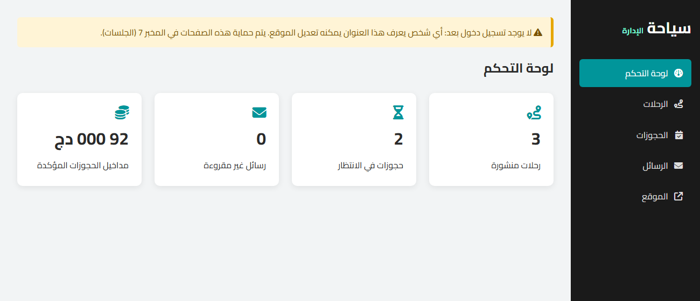
The admin area manages the content of the site. Its dashboard uses aggregate queries (COUNT, SUM):
includes/queries.php (extract)
// ------------------------------------------------------------------ dashboard
/** A few numbers for the admin dashboard, each from one aggregate query. */
function get_statistics(): array
{
$pdo = db();
return [
'trips' => (int) $pdo->query('SELECT COUNT(*) FROM trips WHERE is_published = 1')->fetchColumn(),
'pending' => (int) $pdo->query("SELECT COUNT(*) FROM bookings WHERE status = 'pending'")->fetchColumn(),
'unread' => (int) $pdo->query('SELECT COUNT(*) FROM contact_messages WHERE is_read = 0')->fetchColumn(),
'revenue' => (int) $pdo->query("SELECT COALESCE(SUM(total_price), 0) FROM bookings WHERE status = 'confirmed'")->fetchColumn(),
];
}
1. List and delete the trips
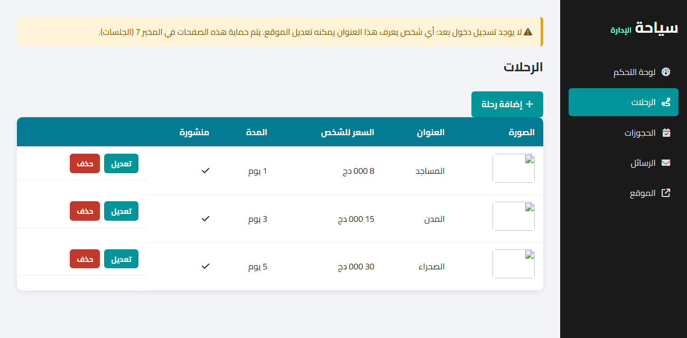
admin/trips.php
<?php
require __DIR__ . '/../includes/functions.php';
require __DIR__ . '/../includes/queries.php';
$trips = get_trips(false); // also the unpublished ones
// result of the previous action (trip_form.php and trip_delete.php redirect here with ?status=...)
$messages = [
'created' => ['Success', 'تمت إضافة الرحلة.'],
'updated' => ['Success', 'تم تعديل الرحلة.'],
'deleted' => ['Success', 'تم حذف الرحلة.'],
'has_bookings' => ['Error', 'لا يمكن حذف رحلة لديها حجوزات: ألغوا نشرها بدلاً من ذلك.'],
'not_found' => ['Error', 'هذه الرحلة غير موجودة.'],
];
$status = $messages[$_GET['status'] ?? ''] ?? null;
$page_title = 'الرحلات';
$active = 'trips';
require __DIR__ . '/header.php';
?>
<?php if ($status): ?>
<p class="Flash Flash_<?= $status[0] ?>"><?= $status[1] ?></p>
<?php endif; ?>
<p><a href="trip_form.php" class="Button"><i class="fa-solid fa-plus"></i> إضافة رحلة</a></p>
<table class="Admin_Table">
<tr>
<th>الصورة</th>
<th>العنوان</th>
<th>السعر للشخص</th>
<th>المدة</th>
<th>منشورة</th>
<th></th>
</tr>
<?php foreach ($trips as $trip): ?>
<tr>
<td><img src="<?= e(image_url($trip['image'], '../')) ?>" alt="" class="Thumbnail" /></td>
<td><?= e($trip['title']) ?></td>
<td><?= money((int) $trip['price']) ?></td>
<td><?= (int) $trip['duration_days'] ?> يوم</td>
<td><?= $trip['is_published'] ? '<i class="fa-solid fa-check"></i>' : '<i class="fa-solid fa-xmark"></i>' ?></td>
<td>
<div class="Actions">
<a href="trip_form.php?id=<?= (int) $trip['id'] ?>" class="Button Small">تعديل</a>
<!-- deleting changes data: a POST form, never a simple link (GET) -->
<form action="trip_delete.php" method="post" data-confirm="حذف الرحلة «<?= e($trip['title']) ?>»؟">
<input type="hidden" name="id" value="<?= (int) $trip['id'] ?>" />
<button type="submit" class="Button Small Danger">حذف</button>
</form>
</div>
</td>
</tr>
<?php endforeach; ?>
</table>
<?php require __DIR__ . '/footer.php'; ?>
admin/trip_delete.php
<?php
require __DIR__ . '/../includes/functions.php';
require __DIR__ . '/../includes/queries.php';
require_post('trips.php');
$id = filter_input(INPUT_POST, 'id', FILTER_VALIDATE_INT);
if (!$id || get_trip($id) === null) {
redirect('trips.php?status=not_found');
}
redirect(delete_trip($id) ? 'trips.php?status=deleted' : 'trips.php?status=has_bookings');
includes/queries.php (extract)
/**
* Deletes a trip. Returns false if it has bookings:
* the foreign key of the bookings table (ON DELETE RESTRICT) forbids it.
*/
function delete_trip(int $id): bool
{
try {
$statement = db()->prepare('DELETE FROM trips WHERE id = ?');
$statement->execute([$id]);
return $statement->rowCount() === 1;
} catch (PDOException $e) {
if ($e->getCode() === '23000') { // integrity constraint violation
return false;
}
throw $e;
}
}
- Deleting changes data: it is a POST form, never a link (a link can be followed by a search engine, a browser preloading pages, or a malicious page).
rowCount()returns the number of rows deleted or modified.- A trip with bookings cannot be deleted: MySQL refuses (foreign key) with the error code
23000, whichdelete_trip()catches to show a clear message. Unpublishing it (is_published = 0) hides it from the site instead.
2. Create and update a trip
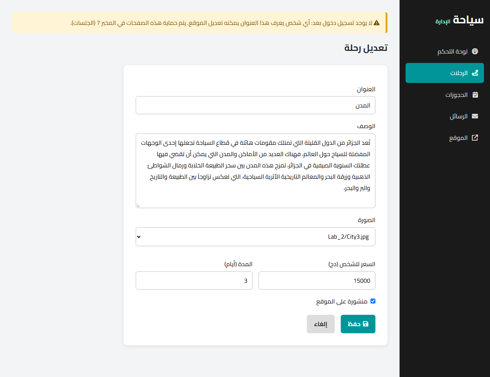
admin/trip_form.php
<?php
// Creates a trip (trip_form.php) or edits one (trip_form.php?id=3).
require __DIR__ . '/../includes/functions.php';
require __DIR__ . '/../includes/queries.php';
$id = filter_input(INPUT_GET, 'id', FILTER_VALIDATE_INT) ?: null;
$trip = ['title' => '', 'description' => '', 'image' => '', 'price' => '', 'duration_days' => 1, 'is_published' => 1];
if ($id !== null) {
$trip = get_trip($id);
if ($trip === null) {
redirect('trips.php?status=not_found');
}
}
// the images that can be chosen: the photos of SRC/IMAGES (uploading files is the subject of Lab 6)
$images = array_map(
fn ($path) => substr($path, strlen(__DIR__ . '/../' . IMAGES_URL)),
array_merge(glob(__DIR__ . '/../' . IMAGES_URL . 'Lab_2/*.jpg'), glob(__DIR__ . '/../' . IMAGES_URL . '*.jpg'))
);
$errors = [];
if ($_SERVER['REQUEST_METHOD'] === 'POST') {
$trip = [
'title' => trim($_POST['title'] ?? ''),
'description' => trim($_POST['description'] ?? ''),
'image' => $_POST['image'] ?? '',
'price' => filter_input(INPUT_POST, 'price', FILTER_VALIDATE_INT, ['options' => ['min_range' => 0]]),
'duration_days' => filter_input(INPUT_POST, 'duration_days', FILTER_VALIDATE_INT, ['options' => ['min_range' => 1, 'max_range' => 30]]),
'is_published' => isset($_POST['is_published']) ? 1 : 0, // an unchecked checkbox is not sent at all
];
if ($trip['title'] === '' || mb_strlen($trip['title']) > 100) {
$errors[] = 'العنوان إجباري (100 حرف على الأكثر).';
}
if ($trip['description'] === '') {
$errors[] = 'الوصف إجباري.';
}
if (!in_array($trip['image'], $images, true)) {
$errors[] = 'الرجاء اختيار صورة.';
}
if ($trip['price'] === false || $trip['price'] === null) {
$errors[] = 'السعر يجب أن يكون عدداً صحيحاً موجباً.';
}
if ($trip['duration_days'] === false || $trip['duration_days'] === null) {
$errors[] = 'المدة بين 1 و 30 يوماً.';
}
if (!$errors) {
if ($id === null) {
create_trip($trip);
redirect('trips.php?status=created');
}
update_trip($id, $trip);
redirect('trips.php?status=updated');
}
}
$page_title = $id === null ? 'إضافة رحلة' : 'تعديل رحلة';
$active = 'trips';
require __DIR__ . '/header.php';
?>
<?php if ($errors): ?>
<div class="Flash Flash_Error">
<ul>
<?php foreach ($errors as $error): ?>
<li><?= e($error) ?></li>
<?php endforeach; ?>
</ul>
</div>
<?php endif; ?>
<form method="post" class="Admin_Form">
<label for="Title">العنوان</label>
<input type="text" id="Title" name="title" value="<?= e($trip['title']) ?>" maxlength="100" required />
<label for="Description">الوصف</label>
<textarea id="Description" name="description" rows="6" required><?= e($trip['description']) ?></textarea>
<label for="Image">الصورة</label>
<select id="Image" name="image" required>
<option value="">اختر صورة</option>
<?php foreach ($images as $image): ?>
<option value="<?= e($image) ?>" <?= $image === $trip['image'] ? 'selected' : '' ?>><?= e($image) ?></option>
<?php endforeach; ?>
</select>
<div class="Row">
<div>
<label for="Price">السعر للشخص (دج)</label>
<input type="number" id="Price" name="price" value="<?= e((string) $trip['price']) ?>" min="0" step="500" required />
</div>
<div>
<label for="Duration">المدة (أيام)</label>
<input type="number" id="Duration" name="duration_days" value="<?= e((string) $trip['duration_days']) ?>" min="1" max="30" required />
</div>
</div>
<label class="Checkbox">
<input type="checkbox" name="is_published" <?= $trip['is_published'] ? 'checked' : '' ?> />
منشورة على الموقع
</label>
<div class="Row">
<button type="submit" class="Button"><i class="fa-solid fa-floppy-disk"></i> حفظ</button>
<a href="trips.php" class="Button Secondary">إلغاء</a>
</div>
</form>
<?php require __DIR__ . '/footer.php'; ?>
includes/queries.php (extract)
/** Inserts a trip and returns its new id. */
function create_trip(array $trip): int
{
$statement = db()->prepare(
'INSERT INTO trips (title, description, image, price, duration_days, is_published)
VALUES (:title, :description, :image, :price, :duration_days, :is_published)'
);
$statement->execute([
'title' => $trip['title'],
'description' => $trip['description'],
'image' => $trip['image'],
'price' => $trip['price'],
'duration_days' => $trip['duration_days'],
'is_published' => $trip['is_published'],
]);
return (int) db()->lastInsertId();
}
/** Updates a trip; returns false if the id does not exist. */
function update_trip(int $id, array $trip): bool
{
$statement = db()->prepare(
'UPDATE trips
SET title = :title, description = :description, image = :image, price = :price,
duration_days = :duration_days, is_published = :is_published
WHERE id = :id'
);
$statement->execute([
'id' => $id,
'title' => $trip['title'],
'description' => $trip['description'],
'image' => $trip['image'],
'price' => $trip['price'],
'duration_days' => $trip['duration_days'],
'is_published' => $trip['is_published'],
]);
// rowCount() is 0 when nothing changed too: check that the trip exists instead
return $statement->rowCount() > 0 || get_trip($id) !== null;
}
One form for both actions: without ?id= it creates (INSERT), with ?id=3 it loads the trip and updates it (UPDATE ... WHERE id = :id). Named placeholders (:title) are easier to read than ? when there are many values. An unchecked checkbox is not sent at all, hence isset($_POST['is_published']). The image is chosen in a list of existing photos (uploading files is part of Lab 6).
3. Bookings and messages
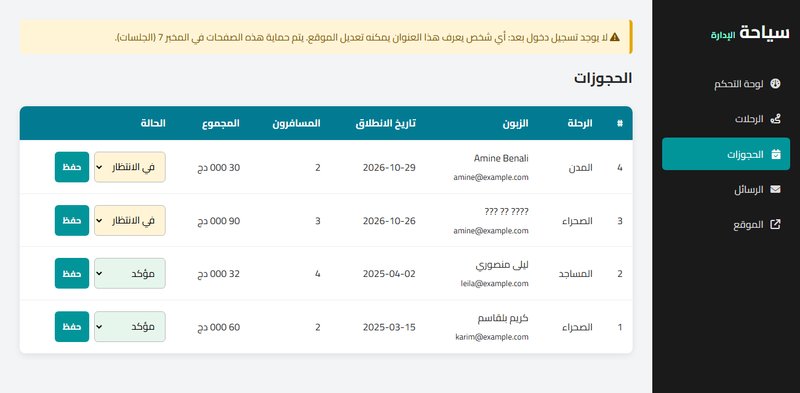
admin/bookings.php
<?php
require __DIR__ . '/../includes/functions.php';
require __DIR__ . '/../includes/queries.php';
$statuses = ['pending' => 'في الانتظار', 'confirmed' => 'مؤكد', 'cancelled' => 'ملغى'];
// change the status of a booking, then reload the list (Post/Redirect/Get)
if ($_SERVER['REQUEST_METHOD'] === 'POST') {
$id = filter_input(INPUT_POST, 'id', FILTER_VALIDATE_INT);
if ($id) {
set_booking_status($id, $_POST['status'] ?? '');
}
redirect('bookings.php');
}
$bookings = get_bookings();
$page_title = 'الحجوزات';
$active = 'bookings';
require __DIR__ . '/header.php';
?>
<table class="Admin_Table">
<tr>
<th>#</th>
<th>الرحلة</th>
<th>الزبون</th>
<th>تاريخ الانطلاق</th>
<th>المسافرون</th>
<th>المجموع</th>
<th>الحالة</th>
</tr>
<?php foreach ($bookings as $booking): ?>
<tr>
<td><?= (int) $booking['id'] ?></td>
<!-- trip_title comes from the trips table, thanks to the JOIN of get_bookings() -->
<td><?= e($booking['trip_title']) ?></td>
<td><?= e($booking['full_name']) ?><br /><small><?= e($booking['email']) ?></small></td>
<td><?= e($booking['departure_date']) ?></td>
<td><?= (int) $booking['people'] ?></td>
<td><?= money((int) $booking['total_price']) ?></td>
<td>
<form method="post" class="Inline_Form">
<input type="hidden" name="id" value="<?= (int) $booking['id'] ?>" />
<select name="status" class="Status Status_<?= e($booking['status']) ?>" aria-label="الحالة">
<?php foreach ($statuses as $value => $label): ?>
<option value="<?= $value ?>" <?= $value === $booking['status'] ? 'selected' : '' ?>><?= $label ?></option>
<?php endforeach; ?>
</select>
<button type="submit" class="Button Small">حفظ</button>
</form>
</td>
</tr>
<?php endforeach; ?>
</table>
<?php if (!$bookings): ?>
<p>لا توجد حجوزات بعد.</p>
<?php endif; ?>
<?php require __DIR__ . '/footer.php'; ?>
The list shows the title of the trip of each booking thanks to the JOIN of get_bookings(). The status can only take the values of the ENUM: set_booking_status() checks it before the query. admin/messages.php works the same way (mark as read, delete).
X. Security checklist of this lab
| Risk | Protection used in the Syaha back end |
|---|---|
| SQL injection | only prepared statements with placeholders for outside values |
| XSS (a visitor's text running as code) | every value written in the HTML goes through e() |
| Data changed by a simple link | every change is a POST form; require_post() refuses the rest |
| Prices or totals modified in the browser | the total is computed by the server from the database |
| Redirect to a foreign site | the return address is checked against a list |
| Database details shown to visitors | errors go to the log; the visitor sees a short message |
| Anybody can use the admin area | not solved yet: Lab 7 (login) and Lab 9 |
XI. Your turn
- Design the database of your project on paper: tables, columns, types, primary and foreign keys. Show it to your teacher.
- Create it in phpMyAdmin, then export it (Export tab, format SQL) into
database/your_project.sqlin your repository, with some test data. - Add
includes/config.phpandincludes/db.php; check the connection. - Put your queries in functions (one file, or one file per table) with prepared statements.
- Replace the static content of your pages by loops over the database.
- Make at least one service complete: create, read, update and delete (CRUD), with POST forms and redirects. Your project needs at least five such services by the end of the semester.
- Commit the
.sqlfile each time the structure changes, so that the whole team can import it.
Deliverables
- The design of your database (tables, columns, keys) and its
.sqlfile in the repository. - A PDO connection configured in one place, with exceptions enabled.
- Pages that display data from the database, with every value escaped.
- At least one service with a complete CRUD using prepared statements.
- This lab counts toward the "PHP/AJAX" milestone of the Deadlines table.